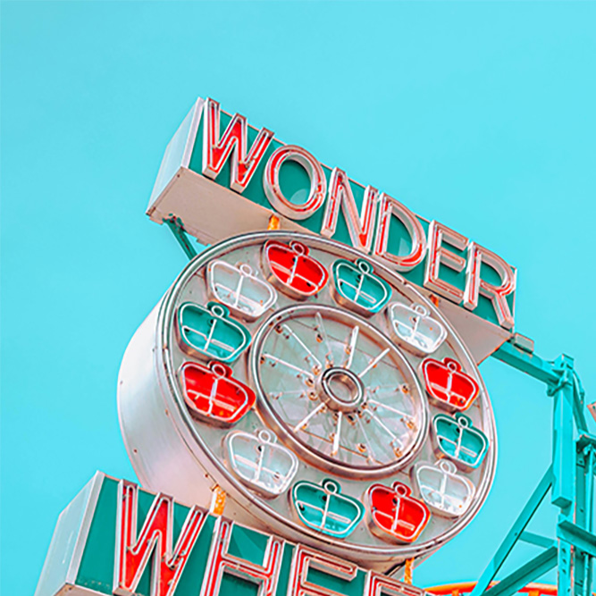
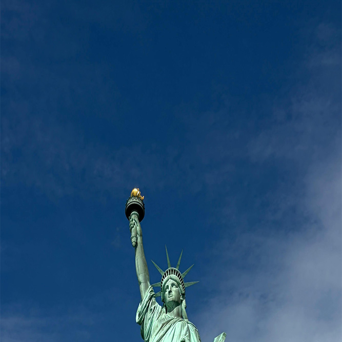
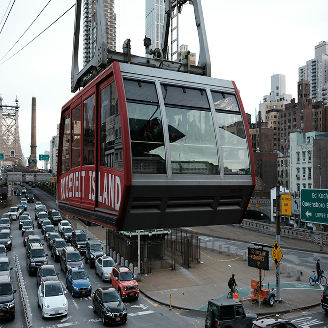
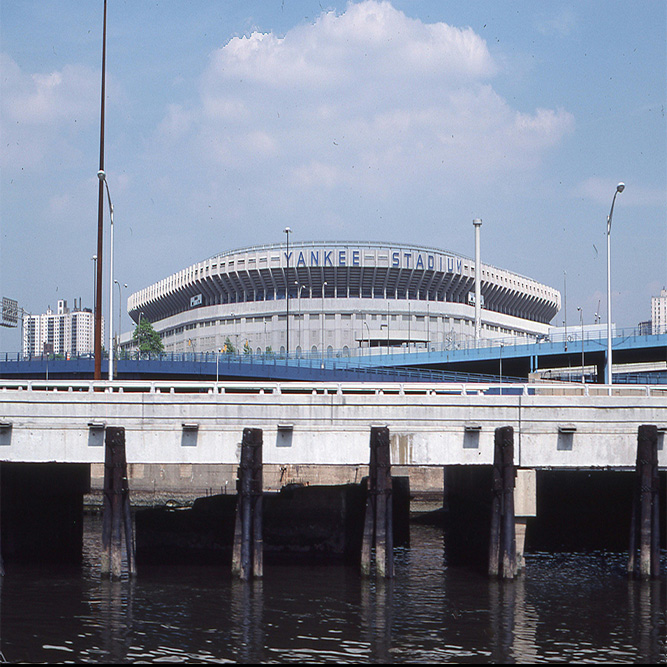
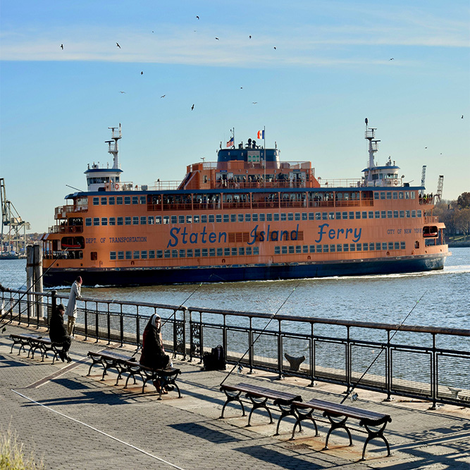

Wonder Wheel
Explore a historic Ferris wheel overlooking Coney Island.
View LandmarkDiscover some of New York City's most memorable landmarks through photos, stories, and visitor information.
Start Exploring
Welcome to the NYC Landmarks Virtual Tour. Explore iconic places across New York City and learn what makes each destination unique.
Browse photographs, discover interesting facts, and find helpful information for your visit.
Discover one of New York City's most recognizable landmarks. Learn about its history and why it continues to welcome visitors from around the world.
Explore Landmark
Explore a historic Ferris wheel overlooking Coney Island.
View Landmark
Discover a scenic cable car ride above the East River.
View Landmark
Learn about one of New York City's famous sports landmarks.
View LandmarkDiscover the history of this famous symbol of freedom.
View LandmarkExplore one of Manhattan's most recognizable skyscrapers.
View Landmark
Experience a famous ferry ride across New York Harbor.
View Landmark